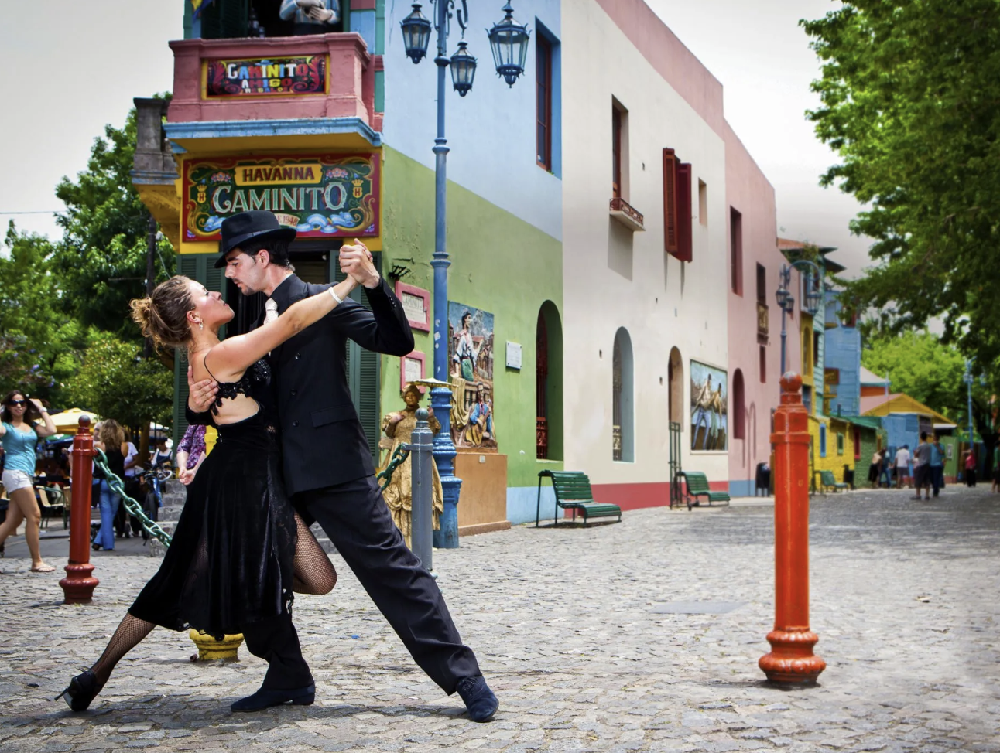
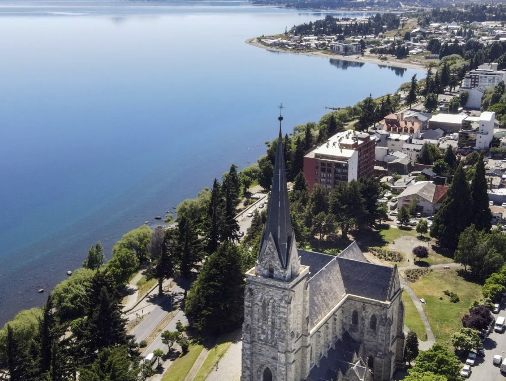
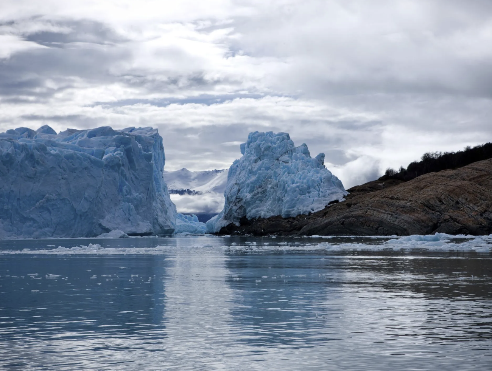
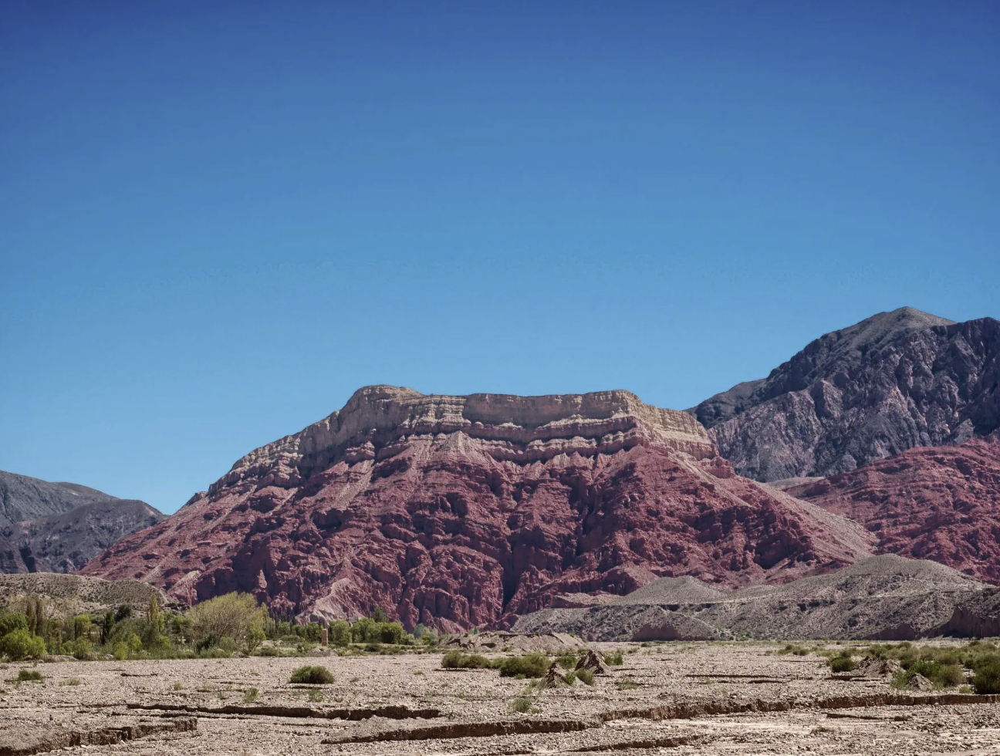
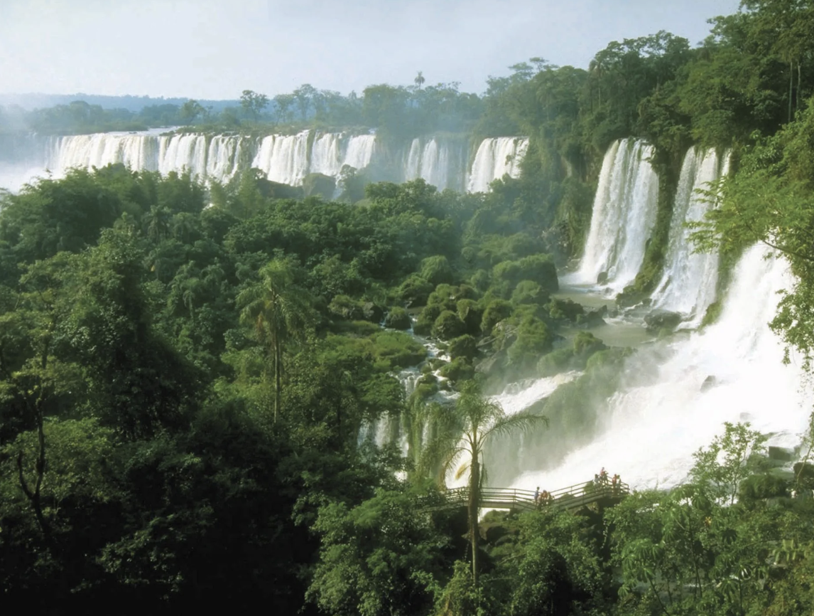

Disfruta la cadencia del bandoneón, la sensualidad de la danza, las parejas que bailan abrazadas en el glamour de la noche porteña. Más que una música típica, más que un baile con raíces, más que un espectáculo único, el tango es historia y es vanguardia, es cultura y es pasión de Buenos Aires. Un fenómeno cultural que trasciende fronteras. Un ícono del Río de la Plata declarado Patrimonio Cultural de la Humanidad por la Unesco.
Recorre los barrios tangueros, las calles empedradas, los shows callejeros y las milongas con clases de tango. Y al caer la noche, visita los espectáculos donde orquestas, cantores y bailarines de primer nivel te esperan con propuestas clásicas y de vanguardia acompañadas por una exquisita cena argentina. Las nuevas generaciones de músicos conviven con leyendas como Carlos Gardel, Enrique Santos Discépolo, Aníbal Troilo y Ástor Piazzolla.Déjate llevar por la magia del tango.

Bariloche
En el parque nacional Nahuel Huapi, junto a la cordillera de los Andes, te espera un lugar rodeado de bellezas naturales. Picos cubiertos de nieve. Espejos de agua cristalina. Vistas que te dejan sin aliento. Bosques de ensueño y lengas cobrizas. Ríos de deshielo y valles cubiertos de flores. Recorre una ciudad declarada Capital Nacional del Turismo de Aventura y Capital Nacional del Chocolate.
Vive las aventuras más diversas que puedas imaginar: cabalgatas y buceo, canopy y escalada, kayak y kitesurf, navegación y mountain bike, trekking y tirolesa, rafting y parapente. Degusta una gastronomía que fusiona la cultura europea con sabores locales: carnes de caza, pescados, ahumados, quesos y frutos del bosque. Disfruta degustaciones en chocolaterías típicas. Y cuando cae la noche, te esperan los bares, las discotecas y los pubs temáticos. Bariloche te ofrece tanto que vas a querer volver.

Glaciar Perito Moreno
Abre tus ojos para contemplar su inmensidad. Y ciérralos, para dejarte sorprender por la voz del glaciar: el susurro de sus hielos y el estruendo súbito que provoca la caída de sus bloques al agua: el espectáculo del derrumbe, el suceso más esperado. El ruido y el silencio. El estruendo y la paz. El lago y el cielo. Un mundo de hielo te espera en el Parque Nacional Los Glaciares.
Aquí puedes contratar excursiones para recorrer un circuito de varios kilómetros, que te ofrece una visión panorámica a través de amplias pasarelas ubicadas a diferentes alturas y accesibles para personas con movilidad reducida. Puedes disfrutar de una caminata inolvidable sobre el hielo del glaciar, contemplarlo desde el agua a bordo de un catamarán y disfrutar una amplia oferta de servicios de gastronomía. Prepárate para la emoción.

Quebrada de Humahuaca
Desafía terrenos montañosos y espacios silvestres. Echa tus pies a andar por paisajes milenarios que te invitan a la aventura, entre el pueblo y los cerros, mientras te guía el canto de las aves de altura. A caballo o en mula, sé parte de cabalgatas inolvidables entre fortalezas precolombinas y paisajes únicos. ¿Te gustan las travesías en 4x4? Súbete a bordo de esta emoción y accede a lugares que nunca hubieras imaginado.
Vive aventuras en La Garganta del Diablo y en la Laguna de Cerro Chico. Caravanas con llamas en Tilcara, Salinas Grandes o Maimará. Cabalgatas por la selva de Las Yungas para atravesar poblados perdidos en la montaña. Y en Abra Pampa te espera un deporte apasionante: el sandboard, para que desciendas desde 200 metros de altura hasta las arenas blancas del cerro El Huancar. Disfruta la Quebrada de Humahuaca, declarada por la Unesco Patrimonio de la Humanidad.

Cataratas del Iguazú
El estruendo del agua. El canto de los pájaros. La belleza del paisaje. La naturaleza que vibra. En este entorno único, un tesoro natural: las Cataratas del Iguazú. 275 saltos de agua que alcanzan hasta los 80 metros de altura. Una de las nuevas Siete Maravillas Naturales del Mundo, declaradas Patrimonio Natural de la Humanidad. Recorre sus pasarelas y sus senderos. Visita el Centro de Interpretación Yvirá Retá. Acércate a las caídas de agua a través de actividades a pura adrenalina.
Con luna llena, aquí también te espera una vivencia única. Cuando un nuevo mundo despierta en la selva, el silencio sólo se interrumpe por los sonidos de los animales. Entonces, descubrirás la Garganta del Diablo, que de noche se muestra misteriosa, iluminada por una luna plateada. Si buscas una experiencia inolvidable, acércate a las Cataratas del Iguazú, una de las primeras áreas protegidas del país.

Ciudad de Salta
¿Por dónde vas a empezar a disfrutar esta ciudad? Descubre su centro histórico. Recorre el Cabildo y la Catedral, la iglesia de San Francisco y el convento de San Bernardo, la plaza 9 de Julio y el mercado artesanal. Visita el Museo de Arqueología de Alta Montaña y el monumento a un prócer de la historia argentina: Martín Miguel de Güemes. Asciende al cerro San Bernardo y explora los bosques de la Reserva del Huaico.
¿Te gusta el folklore? No te pierdas las clásicas peñas con música en vivo, que te esperan en la mítica calle Balcarce. ¿Amas las gastronomías regionales? Saborea las empanadas y el locro, las humitas y los tamales, los asados y las tortillas al rescoldo. Disfruta excursiones a caballo. Y si te atreves con los deportes extremos, aquí te esperan el rafting y la escalada, el rappel y el parapente. Vívelo en la ciudad de Salta.